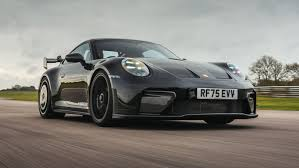
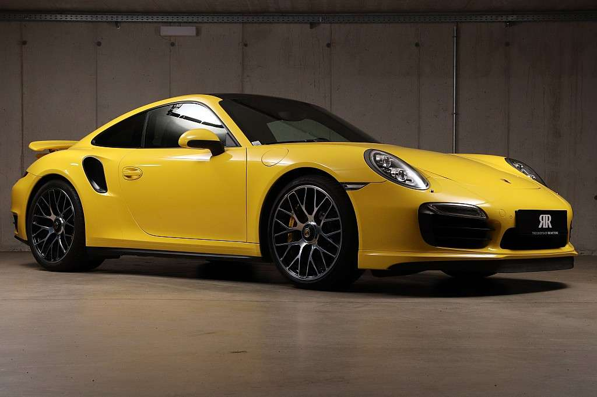

Porsche was first founded in the year 1886 by Ferdinand Porsche. However, my love Porsche began in the year 2013 when I saw a Yellow 911 Porsche Turbo S being sold at the then Operational Porsche Dealership branch along Mombasa road
Since then, it hass been a life long dream of mine to one day own such a car

What a beautiful car!